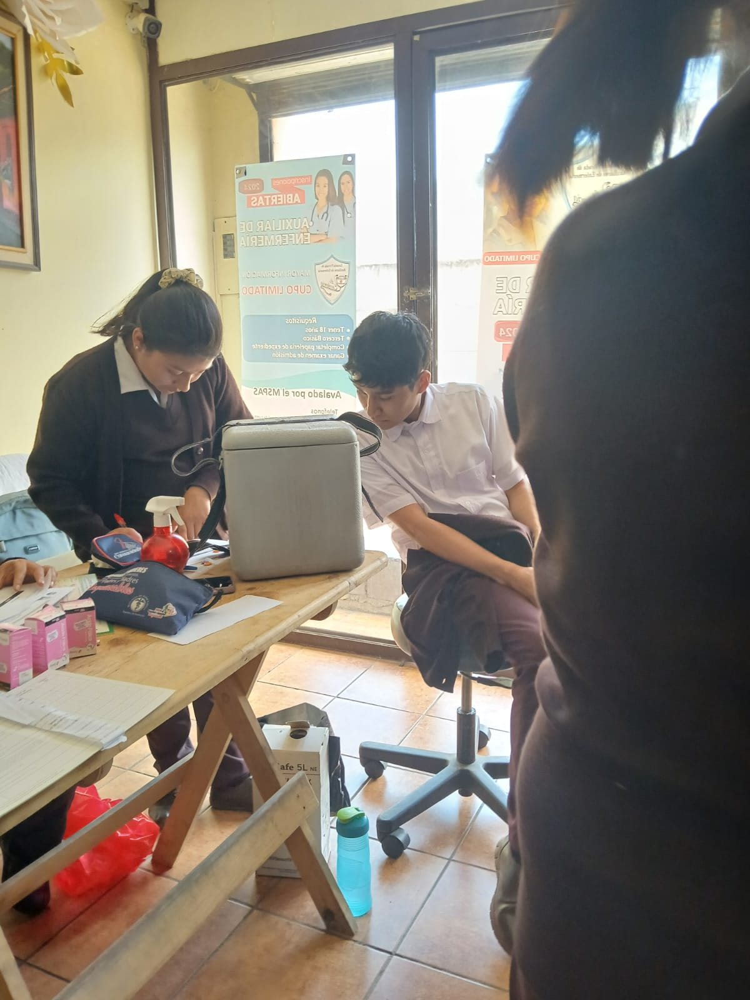

Una profesión de servicio, técnica y presencia humana.
El auxiliar de enfermería acompaña al paciente, apoya procedimientos básicos y convierte el cuidado diario en una experiencia más ordenada y humana.


La enfermería ha evolucionado desde el cuidado cercano hasta convertirse en una disciplina técnica esencial para la salud.
La figura del auxiliar surge como apoyo directo al personal de enfermería y al paciente, con funciones clave en higiene, observación, acompañamiento y organización del entorno clínico.
Un perfil técnico que combina precisión, trato humano y responsabilidad diaria.
Asistencia básica
Apoya en cuidados esenciales, control del entorno y seguimiento de indicaciones.
Vínculo humano
Su presencia ayuda a dar seguridad, orden y confianza en la atención cotidiana.
Disciplina visible
La carrera exige orden, pulcritud y criterio para sostener rutinas de cuidado constantes.

Es una carrera corta, útil y con impacto directo en la calidad de atención.
Si se quiere una salida profesional con relación directa al cuidado de personas, esta formación tiene una identidad clara: servicio, observación y apoyo técnico real.
Humaniza el cuidado
La atención diaria no solo es técnica: también comunica calma, respeto y confianza.
Resuelve lo esencial
Permite actuar con orden en tareas concretas que sostienen el trabajo clínico.
Tiene propósito social
Su aporte es visible en hospitales, clínicas y espacios donde el cuidado necesita apoyo constante.
Crecimiento profesional
Ofrece una base útil para seguir aprendiendo dentro del área de salud.
Servicio humano
La formación desarrolla sensibilidad, respeto y paciencia frente al paciente.
Identidad clara
El café diferencia la carrera y la hace reconocible sin perder el carácter celeste de salud.